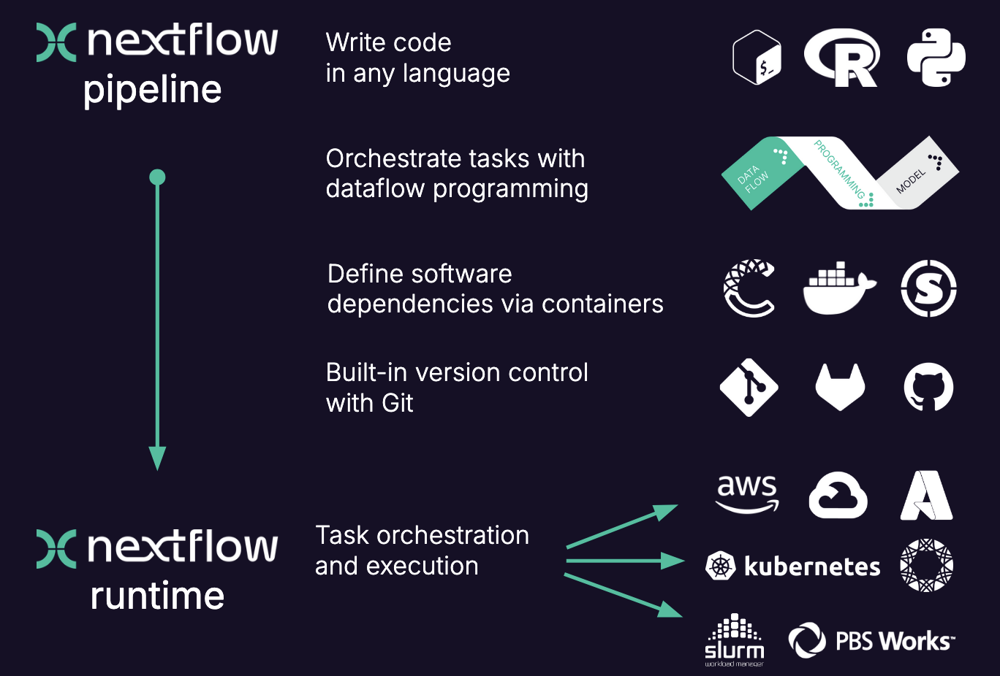
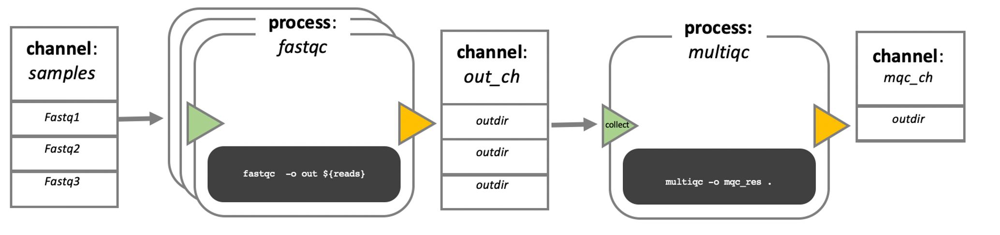

# Add your Python code examples from today
print("Day 3 of MedBioInfo!")Day 3 of MedBioInfo!
# Your actual code hereAugust Lundholm
October 28, 2024
Welcome to Day 3! Here are my reflections and key takeaways from today’s sessions.
Today we worked with Nextflow and workflow management.

[Add your morning session notes here]
[Add your afternoon session notes here]

Today we ran our first Nextflow script! Here’s the complete hello.nf script:
#!/usr/bin/env nextflow
params.greeting = 'Hello world!'
greeting_ch = Channel.of(params.greeting)
process SPLITLETTERS {
input:
val x
output:
path 'chunk_*'
script:
"""
printf '$x' | split -b 6 - chunk_
"""
}
process CONVERTTOUPPER {
input:
path y
output:
stdout
script:
"""
cat $y | tr '[a-z]' '[A-Z]'
"""
}
workflow {
letters_ch = SPLITLETTERS(greeting_ch)
results_ch = CONVERTTOUPPER(letters_ch.flatten())
results_ch.view{ it }
}When we run this script:
We get this output:
N E X T F L O W ~ version 25.04.7
Launching `hello.nf` [jolly_faraday] DSL2 - revision: f5e335f983
executor > local (3)
[96/fd5f07] SPLITLETTERS (1) [100%] 1 of 1 ✔
[7e/dad424] CONVERTTOUPPER (2) [100%] 2 of 2 ✔
HELLO
WORLD!This workflow demonstrates several key Nextflow concepts: - Channels: greeting_ch carries data between processes - SPLITLETTERS process: Uses split command to break text into 6-byte chunks - CONVERTTOUPPER process: Converts text to uppercase using tr command - Workflow: Connects processes with .flatten() to handle multiple outputs - Output: Uses .view{ it } to display results
One of the powerful features of Nextflow is the ability to override parameters from the command line. We can change the greeting message without modifying the script:
This demonstrates: - Parameter override: --greeting changes the default message - Resume functionality: -resume allows Nextflow to skip already completed tasks - Pixi integration: Using pixi run to manage the environment - Flexibility: Same workflow, different input data
We also worked with nf-core pipelines and quality control analysis. The training included running FastQC and MultiQC on sample data:
These reports demonstrate: - FastQC analysis: Per-base quality scores, sequence composition, adapter contamination - MultiQC aggregation: Combined visualization of multiple samples - nf-core standards: Industry best practices for bioinformatics workflows
Day 3 of MedBioInfo!Problem: [Describe the challenge]
Solution: [How you solved it]
Problem: [Another challenge]
Solution: [Your approach]
[Key quote or insight from today]
Goals for tomorrow: - [ ] [Goal 1] - [ ] [Goal 2] - [ ] [Goal 3]
End of Day 3! Ready for what Day 4 brings. 🎯
---
title: "Day 3 of MedBioInfo"
date: 2024-10-28
categories: [medbioinfo, learning, data-science]
author: "August Lundholm"
description: "Day 3 reflections and learnings from medical bioinformatics course"
draft: false
---
# Day 3 of MedBioInfo
Welcome to Day 3! Here are my reflections and key takeaways from today's sessions.
## Today's Focus
Today we worked with Nextflow and workflow management.
{width=80% fig-align="center"}
## Morning Session
*[Add your morning session notes here]*
## Afternoon Session
*[Add your afternoon session notes here]*
## Nextflow Channel and Process
{width=80% fig-align="center"}
## Key Learnings
### New Concepts
- *[Concept 1]*
- *[Concept 2]*
- *[Concept 3]*
### Tools and Technologies
- **Tool 1**: *[Description and use case]*
- **Tool 2**: *[Description and use case]*
## Practical Work
### Running Nextflow Hello World
Today we ran our first Nextflow script! Here's the complete `hello.nf` script:
```nextflow
#!/usr/bin/env nextflow
params.greeting = 'Hello world!'
greeting_ch = Channel.of(params.greeting)
process SPLITLETTERS {
input:
val x
output:
path 'chunk_*'
script:
"""
printf '$x' | split -b 6 - chunk_
"""
}
process CONVERTTOUPPER {
input:
path y
output:
stdout
script:
"""
cat $y | tr '[a-z]' '[A-Z]'
"""
}
workflow {
letters_ch = SPLITLETTERS(greeting_ch)
results_ch = CONVERTTOUPPER(letters_ch.flatten())
results_ch.view{ it }
}
```
When we run this script:
```bash
nextflow run hello.nf
```
We get this output:
```
N E X T F L O W ~ version 25.04.7
Launching `hello.nf` [jolly_faraday] DSL2 - revision: f5e335f983
executor > local (3)
[96/fd5f07] SPLITLETTERS (1) [100%] 1 of 1 ✔
[7e/dad424] CONVERTTOUPPER (2) [100%] 2 of 2 ✔
HELLO
WORLD!
```
This workflow demonstrates several key Nextflow concepts:
- **Channels**: `greeting_ch` carries data between processes
- **SPLITLETTERS process**: Uses `split` command to break text into 6-byte chunks
- **CONVERTTOUPPER process**: Converts text to uppercase using `tr` command
- **Workflow**: Connects processes with `.flatten()` to handle multiple outputs
- **Output**: Uses `.view{ it }` to display results
### Customizing Parameters
One of the powerful features of Nextflow is the ability to override parameters from the command line. We can change the greeting message without modifying the script:
```bash
pixi run nextflow run hello.nf -resume --greeting 'Bonjour le monde!'
```
This demonstrates:
- **Parameter override**: `--greeting` changes the default message
- **Resume functionality**: `-resume` allows Nextflow to skip already completed tasks
- **Pixi integration**: Using `pixi run` to manage the environment
- **Flexibility**: Same workflow, different input data
### nf-core Training
We also worked with nf-core pipelines and quality control analysis. The training included running FastQC and MultiQC on sample data:
#### Quality Control Reports
- [FastQC Report - Sample 1](gut_1_fastqc.html) - Individual quality control report for gut sample 1
- [FastQC Report - Sample 2](gut_2_fastqc.html) - Individual quality control report for gut sample 2
- [MultiQC Report](multiqc_report.html) - Comprehensive report combining all QC metrics
These reports demonstrate:
- **FastQC analysis**: Per-base quality scores, sequence composition, adapter contamination
- **MultiQC aggregation**: Combined visualization of multiple samples
- **nf-core standards**: Industry best practices for bioinformatics workflows
### Code Examples
```{python}
# Add your Python code examples from today
print("Day 3 of MedBioInfo!")
# Your actual code here
```
```{r}
# Add your R code examples from today
# library(package_name)
# data analysis code
```
## Challenges and Solutions
### Challenge 1
**Problem**: *[Describe the challenge]*
**Solution**: *[How you solved it]*
### Challenge 2
**Problem**: *[Another challenge]*
**Solution**: *[Your approach]*
## Insights and Connections
> *[Key quote or insight from today]*
- **Insight 1**: *[What clicked for you?]*
- **Insight 2**: *[Connection to previous days]*
- **Insight 3**: *[Something that surprised you]*
## Questions for Further Exploration
1. *[Question 1]*
2. *[Question 2]*
3. *[Question 3]*
## Looking Ahead
Goals for tomorrow:
- [ ] *[Goal 1]*
- [ ] *[Goal 2]*
- [ ] *[Goal 3]*
## Resources
- *[Useful links from today]*
- *[Documentation or papers mentioned]*
- *[Course materials]*
---
*End of Day 3! Ready for what Day 4 brings.* 🎯